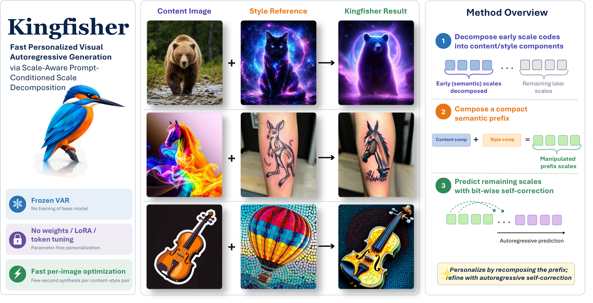
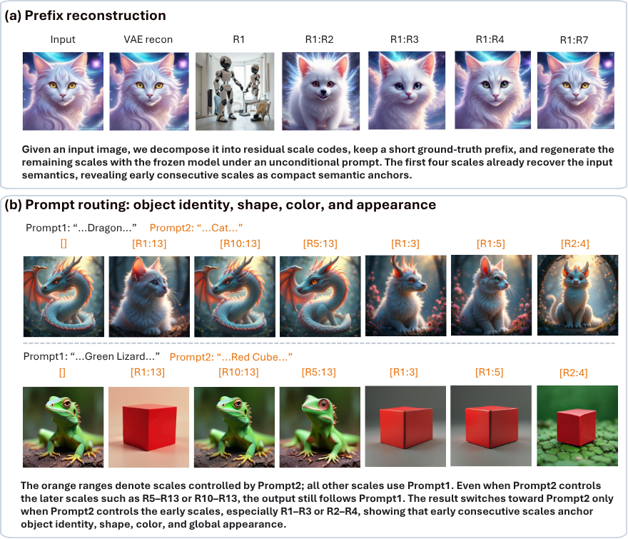
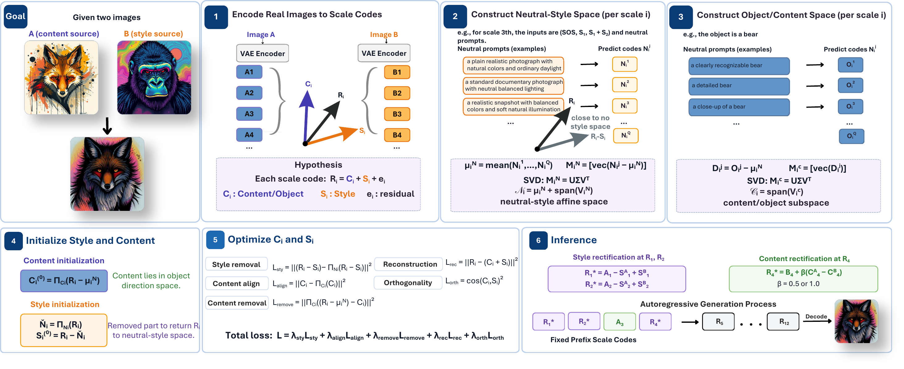
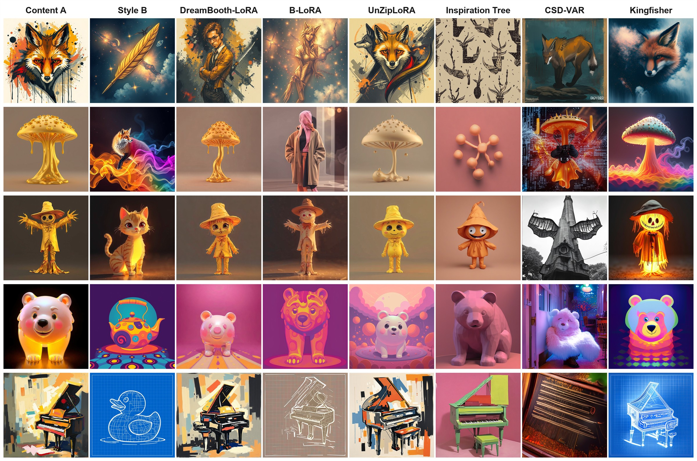
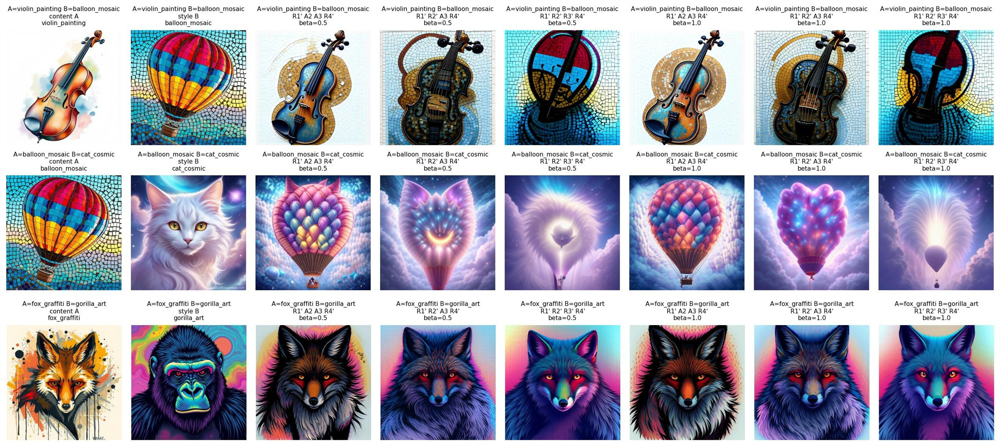
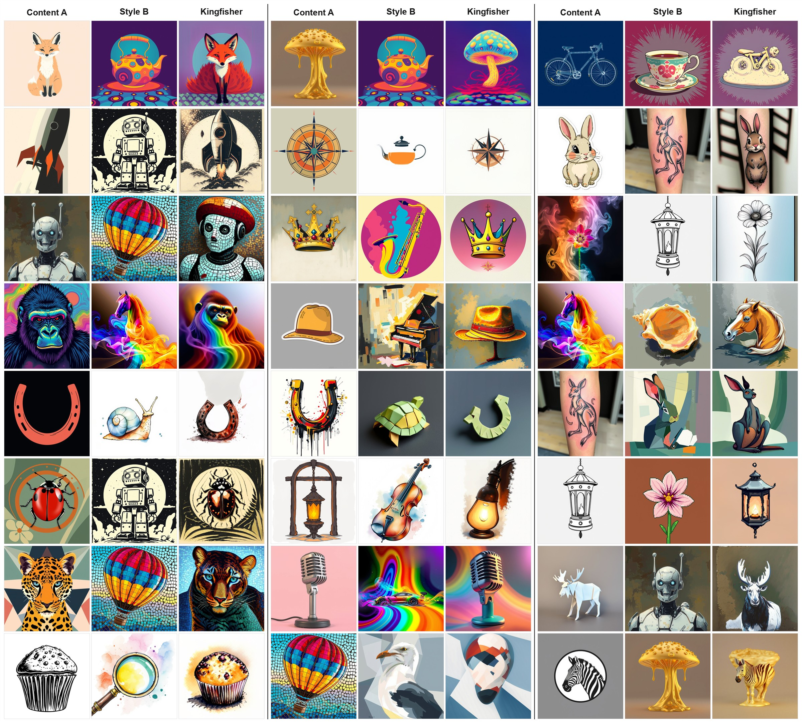
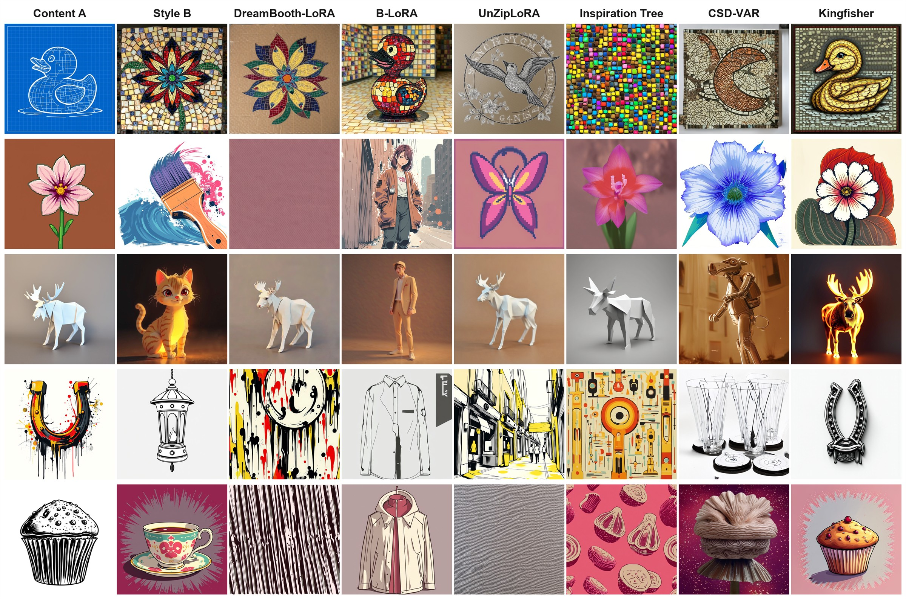
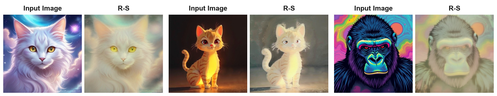
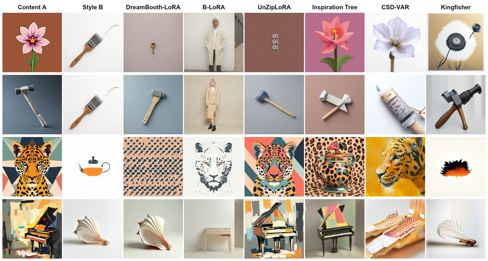

Build scale-code subspaces
Prompt-conditioned directions identify content-related and appearance-related structure inside early autoregressive residual scales.
Project manuscript
A model-tuning-free framework that decomposes early autoregressive scale codes into content and style components, recomposes them as a compact semantic prefix, and lets a frozen visual autoregressive generator complete the remaining scales.
University of Science, Ho Chi Minh City, Vietnam
Vietnam National University, Ho Chi Minh City, Vietnam
National Institute of Informatics, Tokyo, Japan
Overview
Personalized image generation has been extensively studied in diffusion models, often relying on subject-specific optimization of model weights, textual embeddings, LoRA modules, or adapters. KINGFISHER explores a different direction for fast personalization in visual autoregressive models.
The key observation is that a short prefix of early autoregressive scale codes is sufficient to strongly determine object structure and global appearance, while later scales primarily refine the established generation trajectory. KINGFISHER decomposes early residual scale codes into content- and style-related components through prompt-conditioned scale-code subspaces, then recomposes them into a compact semantic prefix for coherent refinement by the frozen generator.


Method

Prompt-conditioned directions identify content-related and appearance-related structure inside early autoregressive residual scales.
Each early scale code is approximated as a composition of content, style, and residual information, separating factors before full synthesis.
Content components from the source image and style components from the reference image are recombined into a compact prefix.
The remaining scales are completed by the frozen visual autoregressive generator via bitwise self-correction.
Results
Experiments report strong content preservation and leading style and text alignment among evaluated methods.
KINGFISHER avoids model tuning, LoRA, adapters, and learned subject embeddings, making per-pair setup lightweight.
Early scales govern object structure and global appearance; later scales mainly refine an already established generation path.

KINGFISHER leads style alignment and text alignment while retaining strong content preservation across 500 ordered content-style pairs.
| Method | CSD-C | CLIP-I | CSD-S | DINO | CLIP-T |
|---|---|---|---|---|---|
| DreamBooth-LoRA | 0.5519 | 0.7362 | 0.4207 | 0.3813 | 0.2492 |
| B-LoRA | 0.4739 | 0.7182 | 0.4990 | 0.4220 | 0.2683 |
| UnZipLoRA | 0.5782 | 0.7322 | 0.3673 | 0.3560 | 0.2472 |
| Inspiration Tree | 0.5413 | 0.7591 | 0.2897 | 0.2601 | 0.2565 |
| CSD-VAR | 0.4731 | 0.7184 | 0.2812 | 0.2503 | 0.2648 |
| Kingfisher | 0.5519 | 0.7900 | 0.5222 | 0.4350 | 0.3105 |
Preparation drops to 23.54 seconds per pair, and the blind study gives KINGFISHER the highest preference share.
| Method | Prep. | Infer. | Votes | Pref. |
|---|---|---|---|---|
| DreamBooth-LoRA | 1542.21s | 11.98s | 54 | 9.0% |
| B-LoRA | 1309.00s | 12.88s | 168 | 28.0% |
| UnZipLoRA | 3463.70s | 11.83s | 45 | 7.5% |
| Inspiration Tree | 7465.36s | 6.56s | 39 | 6.5% |
| CSD-VAR | 171.65s | 1.39s | 40 | 6.7% |
| Kingfisher | 23.54s | 1.61s | 254 | 42.3% |
The first four residual scales nearly reconstruct the input, while prompt routing only shifts strongly when early ranges are routed.
| Experiment | Range | CLIP-I | DINO-I | LPIPS | CLIP-T |
|---|---|---|---|---|---|
| Prefix recon. | R1 | 0.42 | 0.36 | 0.58 | - |
| Prefix recon. | R1:4 | 0.88 | 0.84 | 0.16 | - |
| Prefix recon. | R1:7 | 0.93 | 0.89 | 0.11 | - |
| Prompt routing | R10:13 | - | - | - | 0.28 |
| Prompt routing | R2:4 | - | - | - | 0.81 |
| Prompt routing | R1:5 | - | - | - | 0.84 |

The default [R1*, R2*, A3, R4*] keeps A3 as a semantic anchor, reaches the best CLIP-T score, and avoids the content drop caused by rectifying R3.
Higher beta improves CSD-C and CLIP-I but reduces CSD-S and DINO. We use beta = 0.5 as a balanced operating point.
Removing style, content, reconstruction, or orthogonality terms weakens the trade-off; the full objective gives the most consistent balance.
| Configuration | CSD-C | CLIP-I | CSD-S | DINO | CLIP-T |
|---|---|---|---|---|---|
| [A1, A2, A3, A4] | 0.7774 | 0.9370 | 0.2922 | 0.2720 | 0.3017 |
| [R1*, A2, A3, R4*] | 0.6281 | 0.8392 | 0.4342 | 0.3751 | 0.3119 |
| [R1*, R2*, A3, R4*] | 0.5504 | 0.7922 | 0.5210 | 0.4367 | 0.3127 |
| [R1*, R2*, R3*, R4*] | 0.4979 | 0.7416 | 0.6156 | 0.5416 | 0.2959 |
| Beta | CSD-C | CLIP-I | CSD-S | DINO | CLIP-T |
|---|---|---|---|---|---|
| 0.00 | 0.5436 | 0.7784 | 0.5353 | 0.4597 | 0.3068 |
| 0.25 | 0.5471 | 0.7866 | 0.5333 | 0.4521 | 0.3104 |
| 0.50 | 0.5504 | 0.7922 | 0.5210 | 0.4367 | 0.3127 |
| 0.75 | 0.5551 | 0.7968 | 0.5161 | 0.4239 | 0.3130 |
| 1.00 | 0.5613 | 0.8027 | 0.5063 | 0.4096 | 0.3144 |
| Configuration | CSD-C | CLIP-I | CSD-S | DINO | CLIP-T |
|---|---|---|---|---|---|
| w/o Lsty | 0.5478 | 0.7895 | 0.4726 | 0.3914 | 0.3048 |
| w/o Lalign | 0.5127 | 0.7568 | 0.5073 | 0.4218 | 0.3035 |
| w/o Lremove | 0.5019 | 0.7446 | 0.4981 | 0.4127 | 0.3009 |
| w/o Lrec | 0.4742 | 0.7165 | 0.4386 | 0.3597 | 0.2863 |
| w/o Lorth | 0.5264 | 0.7698 | 0.4935 | 0.4062 | 0.3074 |
| Full objective | 0.5504 | 0.7922 | 0.5210 | 0.4367 | 0.3127 |
Qualitative Results




Citation
@misc{vo2027kingfisher,
title = {KINGFISHER: Fast Personalized Visual Autoregressive Generation via Scale-Aware Prompt-Conditioned Scale Decomposition},
author = {Vo, Dinh-Khoi and Sugimoto, Akihiro and Tran, Minh-Triet and Le, Trung-Nghia},
year = {2027},
note = {Manuscript}
}